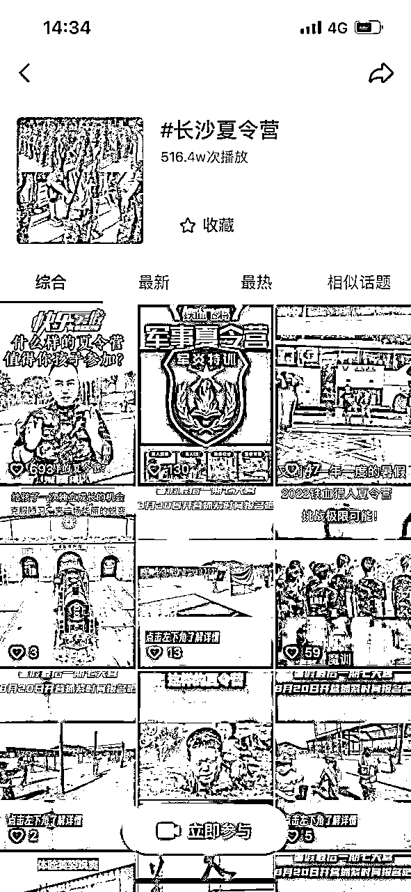

来源：https://chuchuan.feishu.cn/docx/BkzvdOExEocdVcx59WKcfTplnre
2023年抖音本地生活发布数据，上半年GMV超过1000亿，预计全年会超越官宣的1500亿的KPI。尽管抖音上半年启动的抖音外卖增长并不如预期有爆发力，但随着抖音综合类目、酒旅的逐步开放，抖音生活服务市场迎来全方位的生机，也通过短短半年时间内完成疯狂增长。楚川会认为未来2年抖音本地生活最大的机会点在酒旅和综合。
2023年上半年，大部分人对于抖音生活服务的体量业绩是不满意的。楚川分析到的原因有：
首先是随着口罩放开，大家会认为市场迎来报复消费，抖音外卖的放开可能实现千亿级别的增长，但相反外卖出现滑铁卢，2023年KPI定为50；
其次是前面三年的生态搭建，到现在为止就是一个绝对爆发的年份，抖音餐饮+外卖+酒旅+综合类目的马车会一往无前，半年1000亿的规模差点意思；
最后就是2022年同类型的类目美团可以做到抖音的2倍以上，中间差距很大，还不具备真正掰手腕的能力。
【其实，楚川想说这就是抖音生活服务上层调整后的高明之处。】
第一，对外的PR再也不是抖音要几年赶超美团，扎进友商的心脏，反而是高举高打后的稳步向前；
第二，抖音放开综合类目，这是跟美团同一起跑线，抖音短视频的场景还原能力，逐步让行业有了新机会；
第三，抖音和美团的错位竞争，抖音未来的定位一定是留下适合做短视频传播的商家和行业，美团则留下的是蚂蚁雄兵级别体量的散户和小商家，刚需高频、低客单的类目还是会回到美团的盘子里。
我从来没有想过抖音本地生活会带来那么多不一样的方向。
我们以前认为的本地生活只能是简单的到店（吃喝玩乐）、到家（家政外卖），这受限于图文平台的长期影响。 但是抖音来了以后，我们团队发现：银行生活节、地产销售、餐饮供应链、电动车门店、空调大卖场、职业教育、冰激凌工厂等可以吃到本地生活流量，这些都是我们实操拿到结果的类目，但放到美团、大众点评、公众号都难以形成爆发力，或者是拿确切结果。
所以我们团队会认为短视频+本地生活，真正实现了 O2O 的场景化还原：线上导流，线下履约。
这种传达-销售方式有了新的化学反应，拓宽了本地生活触达的行业，这让我们非常兴奋。我们不用再像前面的20年，大家都在餐饮、鲜花、丽人、休娱等行业内卷，而是“广阔天地，大有可为”，因为有大把离钱近，离互联网远的行业，等着大家去探究。
2023年1月-2023年7月，我们团队的总结就是：在综合类目中找机会，寻找突破点，深耕下去。
过去半年，市场经过小半段的疯狂增长，开始面对残酷的现实。我们团队从2022年11月经历餐饮市场的萧条后，一直在餐饮板块就无法拿到令人满意的结果。于是在2023年开始转型做综合类目，如到家服务、职业培训、亲子乐园、亲子教育、区域白酒品牌、瑜伽、家居家装和地产等。下面我将对2023年做一个详细的复盘。
这半年我们团队主要以本地生活综合类目为切入点，选择非常规类目的细分赛道入手，半年时间内单月破千万GMV的项目有：文旅线路、亲子乐园、家政、职业教育；同时以知识付费的形式（沙龙、训练营和大会）筛选操盘手，孵化出团队在民宿、自助棋牌室、家装家居、洗衣连锁、餐饮服务、地产销售、服装定制、教培、瑜伽、冰激凌等行业拿到实操结果；成功让12个传统品牌完成短视频获客转型，如金袋鼠集团下的团团鼠亲子整理归纳品牌线下场馆，某头部植发品牌的线下门店的短视频矩阵布局，湖南最大的儿童国防教育基地兰天训练营的短视频SEO。
文旅1.0阶段，大部分合作都是以卖门票的方式进行，订单大，佣金少，核销率低极大限制了文旅团队的发挥。2023年以前我们团队有服务过景区或者是特色小镇有500-600家，但大部分都是数据好看，受限于客单价、天气、位置、门票政策和等原因，拿不到理想的收益，所以即使在我们团队有不少核心景点资源的时候，也没当做公司的重点战略项目。2020年-2022年，我们在景区和特色小镇的推广路径核心还是用短视频矩阵，一般是KOL：KOC：素人号=1:10:100的方式进行视频堆积。
这个过程的经验总结是：第一，票务系统的利益链条很长，在商务谈判的时候很难推进，并且切入难度和投入的时间不成正比。需要最强势的商务资源一锤定音，然后团队快速切入，30天内打爆；
第二，景区很难跟服务商谈到前置服务费，99%都是以纯佣的方式，但是整体佣金分成（受限于核销率和单张门票佣金低）很难支撑一个团队付出的所有精力，就会陷入死循环；
第三，我们发现短视频的作用最大，文旅1.0还没有发挥直播的威力，核心原因是因为直播的成本过大。
但是在这个阶段，我们发现在文旅大行业中的游玩类在抖音是具备很大的潜力。其中蹦床、亲子乐园、特色小景区的增长空间极大，这些细分类目就是有几个核心标签：释压、提供情绪价值、承载力大。这一类客户，哪怕是一家店以“前置服务费+cps分成”的合作方式都能让一个10人团队达到满意的收入。那么接下来大家可以持续找这样的合作方，或者投资类似的产品，我认为是大有可为。
我来拆解一个案例：蹦床主题公园。
实体店在湖南衡阳—天天向上蹦床主题公园，2020年11月一个月2-3万的营业额，摆在他前面的是：郊区、远高于其他主题乐园的客单、设备一般。那会我们只会认为这是一个可以容纳500人的场地，能不能爆火就看落地，还有老板的配合程度。
我们接手后先用爆店码做大面积曝光，后面2021年3月开始从小程序团购，再到小程序直播，再到达人直播矩阵，再到官方团购。每个月的营业额没有低于过50万，甚至有达到过120万的月份。老板跟着我们一直拥抱抖音，坚持了三年多，于是在3线城市持续霸占top1可以3年多，就是一个奇迹，我们自己也觉得了不起。所以短视频的确是能够改变一个行业的生存现状，把运营深入到产业里，实现长期主义。
在这一类客户，我们团队现在的筛选标准是，大家可以参考：第一，项目整体收费+佣金分成不低100万；第二，景区必须有网红属性，有打卡特色，如果没有一定是需要景区运营的人配合做一些场景微创新，制造传播点；第三，景区的承接能力可以做到大客流、85%以上的好评率；第四，条件都满足可以对赌合作期间的门票数量。
文旅2.0是本地生活最不能忽略的增长。2022年年末，我们终于迎来了共存时代。12月28日，我发了一个朋友圈认为文旅可以筹备做了，所以自己也立马拉团队筹备。当时也因为不少小伙伴都“阳了”的原因，必须居家办公，并且农历年在2023年1月份，所以直接希望是能够找一个项目可以让大家居家办公，还能过年期间也保证收益。于是立马就认为文旅可以作为一个很好的赛道，因为2023年元旦开始，大家就会开始安排春节的行程。我们当时就立马想到了旅游路线的销售，这个可以作为一个短期和长期都能有收益的项目。
旅游路线和高客单产品在抖音的推广，我们会认为是这个行业在抖音的进化，所以我认为这是抖音文旅2.0。我们从2022年12月30号开始对接资源和旅游产品供应商，直接用发短视频矩阵养号、做基础曝光；2023年1月2号开始拿旅游路线的素材，做好视频、音频以及相关的贴片；2023年1月3号晚上开始用无人直播来测试直播间的数据。后面发现文旅2.0的流量扶持是非常大，基本上抖音号经过实名、养号，再用无人直播，就能出单。
2023年1月5日开始我们无人直播间控制在10个，一根网线2-3个直播间同时跑，就用抖音号持续发视频养号，再持续无人直播，就能让直播间72小时内开始出数据。
所以我会认为2023年本地生活不能忽视的板块就是文旅。大家可以看到我们团队从外行入手做文旅，并且无人直播领域也是现学现卖就能做到10个直播间不低于200万GMV一个循环（150个小时左右）。
在这个过程中我们也看到不少服务商先后杀入文旅，并且是持续拿到大结果，如烽火联盟、旅划算等，我这边训练营的学员通过短视频+无人直播的组合拳也是在文旅中不断爆单。
我们从2023年2月开始从视频分发、直播间构建（无人直播、数字人和真人直播）、客服和落地升单，做了详细的拆解，发现还是需要切入供给端才能真正盈利。因为在文旅线路跑的过程中发现，无人直播中私信咨询：下单=5:2，我们解决了流量端的问题，但是在转化端跟不上。
整个2月我走访了20多家旅行社，还有旅游地接和商务团队，发现线路的售卖体系庞大，规模可以很快做到餐饮的水平，但里面的坑会高过任何一个行业。因为地接团队的不确定性，我们2月做到1000万GMV也无法完成高核销率，最终是12%，限制住团队的发挥。
2023年2月我们团队经过深度复盘，在旅游的细分赛道中确定了赚钱的方向和要求。下面将做详细的说明。
首先，文旅行业当下本地生活的主要是以直播为主，但短视频矩阵的功能几乎是没有团队玩转起来，这是最大的机会点；
其次，2023年的三个方向：第一是大通货，做旅游路线，以量取胜；第二是做私人定制路线；第三是文旅+文创+地区特产的组合拳。
最后，能够让生意持续就需要做到5个基本要求，不然很难真正起量，或者成为行业下游的韭菜，无法拿到满意的收益。
第一，稳定的地接和导游服务，解决消费投诉问题能力。地接接团安排行程，地接代收尾款工作，所涉及全产业链分成择导游引导消费的产业链如何确保账目真实性；
第二，酒店门票餐饮等旅游线路必备接待能力，高峰期时如没有客房资源非常容易产品客诉，比如今年三亚西双版纳酒店价格暴涨导致酒店不接受抖音客人直接退单投诉。
第三，成熟的线路(从游客落地接团到送团)或者自驾游车队线路。前期没有成熟的情况可以上纯玩线路少购物或者轻购物。
第四，景区票务，大部分地区票务资源都在大型的旅游公司手里，一般地方政府会有任务比如导入30万游客给你50到100万人次免费票务以用以给旅游公司吸引游客，拥有票务资源是一个非常大优势。
第五，成熟的客服团队，获客的关键必需对产品线路非常了解。必需要本地号码，有经验做过旅游网络谈客的，或者行业资深人员培训，客服直接影响订单数量和质量。
2023年3月，我们根据之前的经验就正式立项成立团队在抖音文旅2.0上发力。在旅游路线上，我们有3个地接和商务团队配合，能够消化私人定制路线的要求，有客户团队能够以最快的速度联系下单客户，锁定客户，合作的优质路线的佣金分成在30%左右；然后这一块，我们也考虑到单量少的问题，于是就根据行业特点和文旅1.0的经验，向下挖掘出2个细分类目：亲子乐园和军事夏令营。这两个类目覆盖了2-16岁宝妈的需求，并且能够做到大批量成交和接待，全流程都可以做到SOP。
在亲子乐园的案例，我们将一个人都没有的园区做到限流，也证明我们选的类目就是正确的。我们用短视频矩阵做好曝光后，筛选出达人进行直播矩阵（达人账号和无人直播账号），最后7天导流3万多人，1000万曝光，首周累计门片GMV破1400万。
军事夏令营的案例，我们从4月开始签约了湖南最大的国防教育基地，不论是接待量和课程软实力都是行业区域顶级。所以我们选择联合运营，我们就用最简单的自有矩阵分发，秉着“大力出奇迹”的方式，把获客成本压到行业最低，视频覆盖面最广，咨询线索极其精准。


长沙军事夏令营的过程，我们做了20个账号的自由矩阵，4月到8月一共发布了5万条左右的视频，其中也邀请云剪+真人探店2000条，以及官方账号直播20场，最后一共招募500多名平均客单价4600元的学生，ROI大约在1:20。这是我们第一年操作这个行业，在未来的2-3年，我们认为可以持续收获矩阵和抖音SEO带来的好处。
以上就是我们团队在抖音文旅1.0到2.0的改变，选择赛道的思路以及在落地运营的一些实操动作。文旅是一座金矿，取决于我们在哪个角度去发力。
2023年上半年，我在很多场合一直在强调的是抖音本地生活越来越内卷，那是因为真正有实力的团队逐渐下场。曾经在电商短视频或者直播赛道中拿到结果的小伙伴，开始在本地生活中展露头角，其中不乏头部MCN转型，视频的分发和直播都能实现品牌千万GMV，进一步挤压了中尾部服务商的生存空间。以前靠着吃流量红利的服务商们逐渐被后来者挤下水，我在2023年加到的服务商也有30-40%离开了这个赛道，最核心的原因是行业的内卷让团队没有生存空间。
最容易的产业，人最多也不赚钱。2023年的抖音本地生活餐饮、美甲美睫、鲜花、眼镜等已经杀疯的行业，就是大家不应该去选择的细分赛道，因为只有天赋异禀和能力通天的人才可以拿结果，并且实现盈利。我们都是普通人，那就不用做逆流而上的事情，而是顺势而为，选择合适的细分赛道，科学可持续发展。
细分赛道应该怎么样选择？我们跟大家分享一下我们团队的标准：第一，如果是低于1000元客单价的行业，必须是前置服务费和服务分成在一个合作周期内大于100万；第二是可经营3年以上，成交周期小于15天，分成金额大于1000元/人。这就是我们现在筛选客户和合作方的金标准，大家可以作为一个参考。
2023年1月-6月，我们做的细分赛道，并且拿到了结果的行业分别为：亲子乐园、家政清洁、职业教育、地产引流、军训夏令营、亲子整理馆、家装引流、知识付费。在这个过程我们的学员分别在民宿、自助棋牌室、家装家居、洗衣连锁、餐饮服务、服装定制、教培、瑜伽、冰激凌批发、汽修、窗帘定制、教培机构等细分赛道拿到结果，其实套用我两个选择标准，都在这个范围里。
在未来的1-2年里，我们团队会认为抖音本地生活到了综合类目的红利，在区域实体项目中去做筛选一定是能盈利。在落地的层面，按照我的方法来，肯定不会错。“实体门店增长=弱IP运营（短视频矩阵&官方直播间）+长期SEO（关键词红利吃1-2年的收益）+私域闭环”，这就是我认为的必胜法则，已经不下1000人用这套方式获得增长，所以你也一定可以。
如何理解弱IP运营，那就是将老板或品牌IP淡化商业IP的功能，因为很难在内容上有突破，并且在众多竞争对手中完成突围。那就是利用短视频矩阵，频繁“@官方账号”、卡关键词等，以及在转化环节上官方直播间，来增加转化的效率，降低做IP的力气，这就是弱IP运营。
其次就是抖音SEO，因为任何一个平台的DAU到了极限就会承载用户的各种需求，而抖音也不例外。我们在宠物、家政、地产和家装等行业发现：当关键词做到占位，SEO有成效的时候，能给公司带来持续的效益，这种价值能持续1-2年。所以我们在未来去布局抖音本地生活的时候，SEO一定不能落下的事情。
抖音的流量分发机制决定了平台只能拉新，最终的商业闭环还是得回到私域。因为LBS流量分发、抖音兴趣电商算法、SEO的混合流量推荐机制，会让这个赛道的商业化流量价格越来越高，内容要求越来越严格，这违背了本地生活矩阵的底层逻辑。所以必须是用抖音作为一个获客、拉新的渠道，最终在私域完成成交、复购。
我前面说过，短视频本地生活的终局是【流量-爆品供应链】，只有这样才能持续吃到短视频的红利。但在供应链端的经验我想跟大家分享的是：供应链是一件最脏最累的工作，收益稳定的背后是逐渐加大的资金压力，货盘的稳定难度。没有极强的操盘能力的团队，个人是不建议以这种方式下场。
2023年，抖音外卖中龙虾品牌基本上在原封不动抄我2022年的作业，但是在执行层面就明显有问题：
第一，中央厨房对于味道标准化的控制力不行，导致口味差异极大；
第二，高举高打流量让抖音外卖运力直接瘫痪，1-2小时的送达服务基本上丧失了外卖即时性的特点，带来的必将是投诉和差评；
第三，虾的采购几乎没有切源头供应链，导致品质鱼龙混杂，死活掺杂。整理来看，对于口味、品质的把控没有我们2022年60%的水平，在流量的把控和财务模型上是缺失的，而行业发展已经1年过去，至少现在看来照葫芦画瓢不定能成功，也说明供应链是一件高要求的项目。
那如何破局，我就提出第二种打市场的方式，值得实体门店和服务商共同思考，那就是：直营或者是联合运营，看起来是当下的最优解。
第一，在餐饮板块的经验，我一共参与了三个品牌的成长，分别为虾浪、十三烧、南霸虎。但我服务过1500家左右的餐饮门店，发现无论是在陪跑、代运营都无法解决持续赚钱的问题，或者是做起来后被“一脚踢开”。于是我就采取了联合运营的方式，以资金和技术同时入股的方式参与到品牌的成长，用我们的经验加速实体门店成长，其中十三烧在2022年完成了天使轮，2023年在筹备A轮的事宜，我们的投入也逐渐实现增值。
第二，不少看过我文章的人，了解到2023年的抖音家政TOP1是由我们孵化，并且拿到第一轮结果。虽然这一轮合作，我们团队很有经验，但陪跑、代运营的身份介入到项目中必将迎来解体，这是所有第三方公司的悲哀。于是我们从2023年6月开始筹备公司到家业务联营，在4-5月我一共签约了4个供应商，以控股的方式运营，只有这样才能保持实操的安全感。
第三，2023年我服务过的3个类目，分别为职业教育、数字人、亲子整理归纳，我们最开始是以服务费+佣金分成的方式合作，但是都在落地30天左右拿到结果，并且让我们感受到了这个类目巨大的潜力。所以都有修订合同，以项目联营的方式继续合作，我们团队则成立项目组，按照阿米巴的方式运转，保证持续收益。
爆品供应链+流量运营。大家一定要牢记使命，这是我们去真正扩大体量的不二法宝。我们做过数千个商家，看到的情况是：火爆的商家90%有爆品，品牌崩盘有90%是供应链失控。所以本地生活的流量运营一定要结合爆品供应链，不论什么形态的商业模式都离不开这套组合。
顶天立地不如铺天盖地。抖音本地生活的流量推荐机制决定了只能玩矩阵，只有矩阵才能解决实体商家的内容乏力，才能解决LBS的流量分发问题。只有铺天盖地的方式，以量取胜、大力出奇迹才能让结果持续。
互联网平台的流量获客成本只会越来越高，所以必须在内容端一切以单次引流为目的，降低做IP的成本，并用私域做留存，沉淀用户，降低二次获客成本。以下就是我们探索出的绝对红利公式，需要牢记。
实体品牌在抖音的增长路径是逐步性，要从传播端做到占有率，做到持续占位，并且有足够多的短视频矩阵、直播矩阵和用户就能形成新的品牌势能。
我们团队未来会持续扎根在本地生活的到家板块，探究适合我们的细分类目，并且拿到结果。抖音是第一个做短视频本地生活的平台，未来肯定不是唯一，所以只需要建立起自身的运营和服务优势，就能长久活下去。我们团队的判断就是UGC、行业产业资源和运营经验是永远不会被平台淘汰的，那作为从业者就是思考怎么建立起来这些能力。
最后我依旧想说：跟有结果的学习、合作，因为结果不会说谎。我是楚川，持续为本地生活实操派发声。